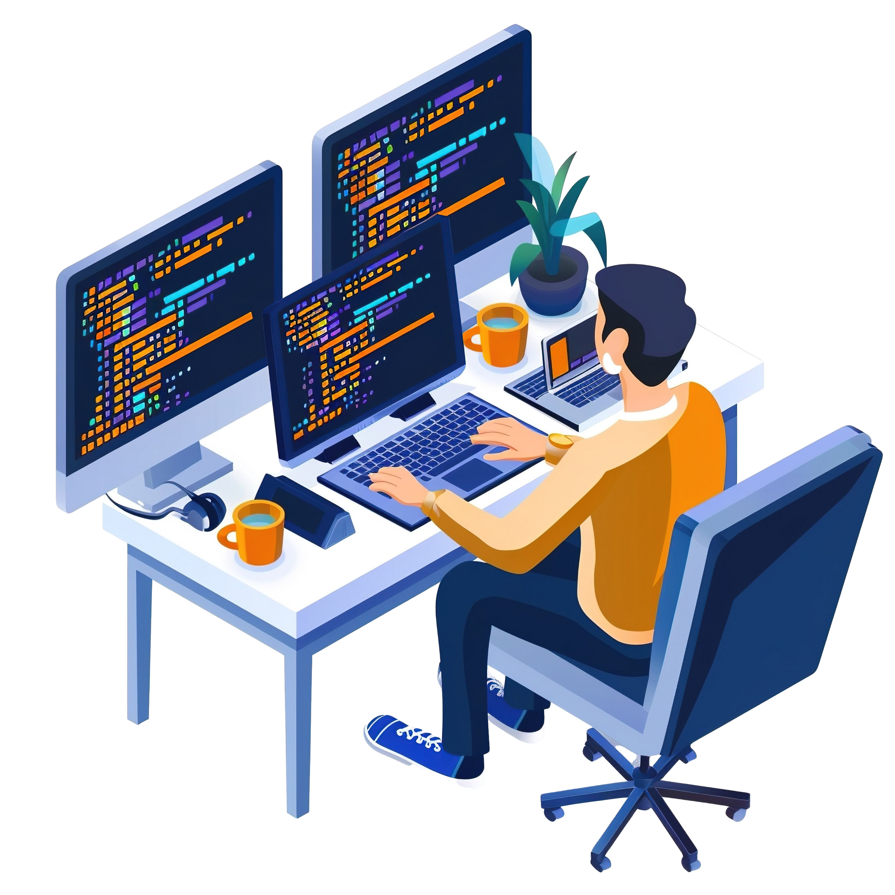

Hi, My Name is Niranjan.
I'm passionate in various fields which are as below :

Work Experience

Technologies Used & Using.(2022 - Current)
Work Description :-
- Git Terminal - 1.year of Exp.
- Git Hub - 1.year of Exp.
- HTML & CSS - 2.years of Exp.
- JavaScript - 1.5.years of Exp.
- MySQL / Database Design - 1.year of Exp.
- Optimizations - 2.years of Exp.
- Python Programming - 1.5.years of Exp.
- React.JS - 1.year of Exp.
- WordPress - 2.years Exp

Frontend Developer.(2022 - Current)
Work Description :-
As a front-end developer since 2022, I've navigated evolving frameworks like React.Js, JavaScript, and many more. Deployments are now seamless with these tools like Vercel, Gatsby Cloud, and Netlify, turning one developer into an entire DevOps department. Soft skills communication, adaptability are crucial as I collaborate with designers and C-suite executives.
As a front-end developer since 2022, I've navigated evolving frameworks like React.Js, JavaScript, and many more. Deployments are now seamless with these tools like Vercel, Gatsby Cloud, and Netlify, turning one developer into an entire DevOps department. Soft skills communication, adaptability are crucial as I collaborate with designers and C-suite executives.

WordPress Developer.(2022 - Current)
Work Description :-
As a WordPress developer from 2022 to the present day, I've been at the forefront of creating beautiful, functional websites. WordPress, is the world's favorite Content Management System (CMS), continues to dominate the internet, and your role has been pivotal. With the help of WordPress, crafting websites has been in high demand.
As a WordPress developer from 2022 to the present day, I've been at the forefront of creating beautiful, functional websites. WordPress, is the world's favorite Content Management System (CMS), continues to dominate the internet, and your role has been pivotal. With the help of WordPress, crafting websites has been in high demand.

Prompt Engineer. (2022 - Current)
Work Description :-
As a prompt engineer involves crafting natural-language instructions for AI models. These prompts guide the AI in generating desired results. For instance, when using GPT-3, prompt engineers adopt a conversational approach, coaxing the model to solve specific problems.Image-generation prompts often consist of keywords or phrases related to art styles & various techniques.
As a prompt engineer involves crafting natural-language instructions for AI models. These prompts guide the AI in generating desired results. For instance, when using GPT-3, prompt engineers adopt a conversational approach, coaxing the model to solve specific problems.Image-generation prompts often consist of keywords or phrases related to art styles & various techniques.

Python Developer.(2022 - 2023)
Work Description :-
As a Python developer, I've been immersed in a dynamic and ever-evolving field. My role involved writing quality code, testing for errors, and deploying applications. I collaborated with front-end developers, ensuring seamless integration of user-facing elements with server-side logic. Additionally, I tackled data security protocols, application automation, & performance too.
As a Python developer, I've been immersed in a dynamic and ever-evolving field. My role involved writing quality code, testing for errors, and deploying applications. I collaborated with front-end developers, ensuring seamless integration of user-facing elements with server-side logic. Additionally, I tackled data security protocols, application automation, & performance too.

JavaScript & React-Js.(2022 - 2023)
Work Description :-
As a JavaScript and React.js developer, I was a part of an exciting ecosystem. My role involved creating and implementing user interface components for web and mobile applications using React. I collaborated with testers, designers, backend engineers, and project managers to build functional applications. Understanding HTML,CSS. JS was crucial, as React relies on these technologies.
As a JavaScript and React.js developer, I was a part of an exciting ecosystem. My role involved creating and implementing user interface components for web and mobile applications using React. I collaborated with testers, designers, backend engineers, and project managers to build functional applications. Understanding HTML,CSS. JS was crucial, as React relies on these technologies.